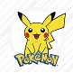

Pokemon
Pokemon är djur som slåss Pokémon[a][1][2][3] (an abbreviation for Pocket Monsters[b] in Japan) is a Japanese anthology media franchise managed by The Pokémon Company, founded by Nintendo, Game Freak, and Creatures. The franchise was created by Satoshi Tajiri in 1996,[4] and is centered around fictional creatures called "Pokémon". In Pokémon, Pokémon Trainers are people who catch, train, care for, and battle with Pokémon. The English slogan for the franchise is "Gotta Catch ‘Em All!".[5][6] There are currently 1008 Pokémon species.[7] The franchise began as Pocket Monsters: Red and Green (later released outside of Japan as Pokémon Red and Blue), a pair of video games for the original Game Boy handheld system that were developed by Game Freak and published by Nintendo in February 1996. Pokémon soon became a media mix franchise adapted into various different media.[8] Pokémon is estimated to be the highest-grossing media franchise of all time. The Pokémon video game series is the third best-selling video game franchise of all time with more than 440 million copies sold[9] and one billion mobile downloads.[10] The Pokémon video game series spawned an anime television series that has become the most successful video game adaptation of all time[11] with over 20 seasons and 1,000 episodes in 192 countries.[9] The Pokémon Trading Card Game is the highest-selling trading card game of all time[12] with over 43.2 billion cards sold. In addition, the Pokémon franchise includes the world's top-selling toy brand,[13] an anime film series, a live-action film (Detective Pikachu), books, manga comics, music, merchandise, and a temporary theme park. The franchise is also represented in other Nintendo media, such as the Super Smash Bros. series, where various Pokémon characters are playable.